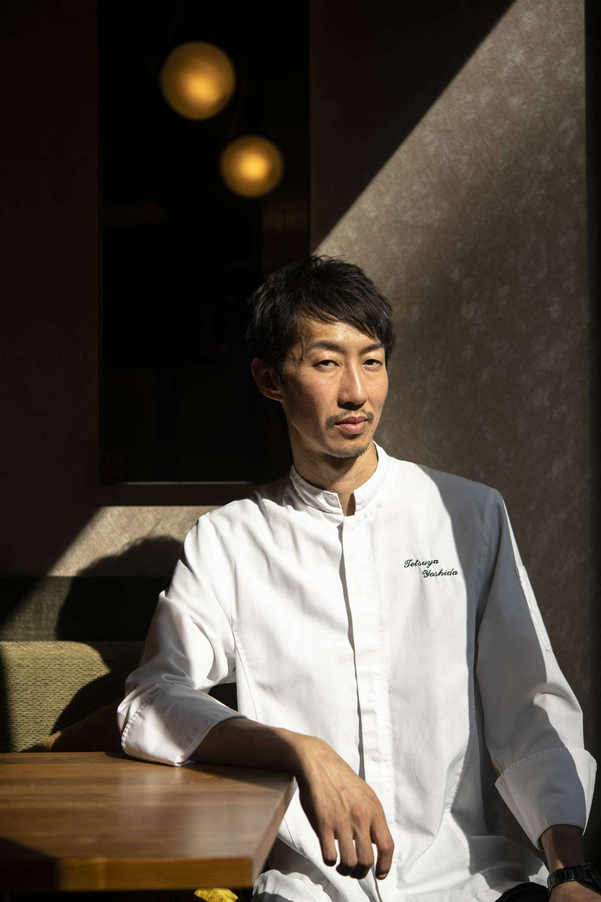

Born in Nagasaki, a cosmopolitan Japanese port city, the new culinary prodigy drew his inspiration from an atypical curriculum. After studying law, Tetsuya threw himself into his passion for gastronomy and moved to Osaka for 2 years, where he learned the rudiments of cooking. He continued his apprenticeship at the French bistronomic restaurant Les Enfants Terribles and the Michelin-starred gastronomic restaurant Les Enfants Gâtés (1 star) as second-in-command. restaurant paris sphere chef DSC6652 800x1200 - Sphere, the Paris gastronomic restaurant sphere restaurant paris salle DSC0412 1600x1066 - Sphere, the gastronomic restaurant in Paris To perfect his knowledge of French cuisine, he arrived in Paris in 2014, working in the brigade at Esquisse (2 Michelin stars) and then as chef at Les Canailles for 5 years.